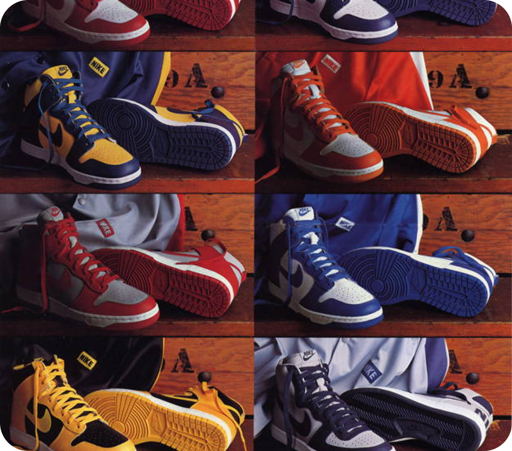
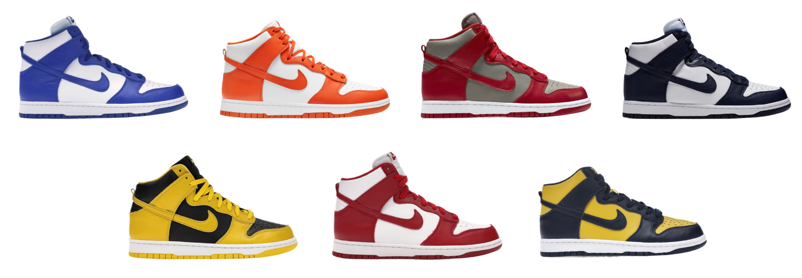
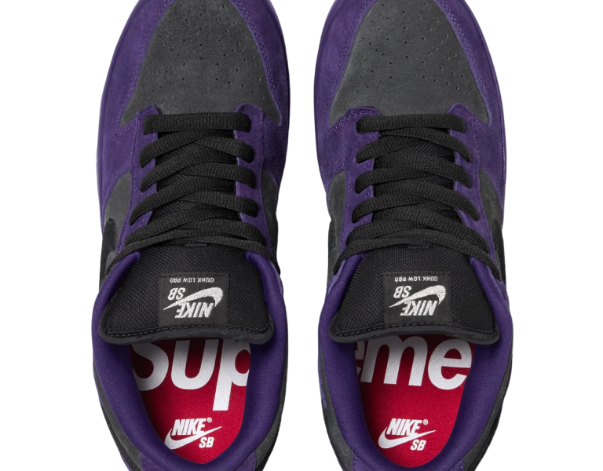
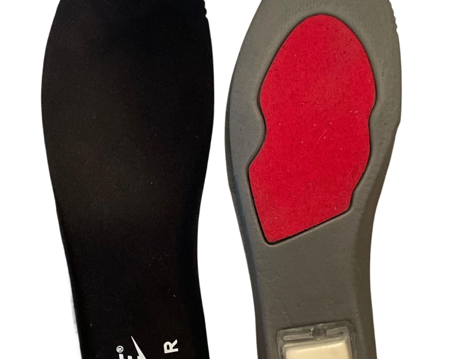
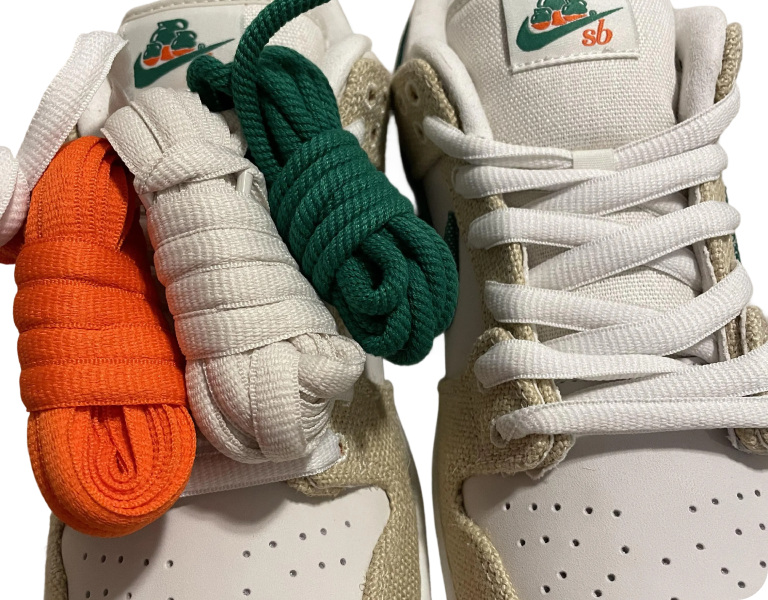

Orientarsi
Capire la storia del modello e scegliere come proseguire.
Andrea Barzaghi · UI/UX Design · 2026
Come raccontare una cultura attraverso le scarpe? Il mio archivio visivo della nike Dunk SB parte della storia e dai modelli più rari per costruire

Andrea Barzaghi
•
ITS Web Design e Strategie Digitali
•
UI/UX Design
•
2026
Concept
La cultura delle Nike Dunk SB incrocia skateboarding, street art, sneaker collecting e mercato secondario. Ho costruito un archivio che permette più livelli di accesso ai contenuti.
Una buona documentazione permette di capire dove andare dopo.
Il contributo del mio archivio
Ho costruito una chiave di lettura del progetto: distinguere la storia del modello, le caratteristiche tecniche SB-specifiche e i modelli più rari. La timeline e il confronto tra colorways rendono concreta questa distinzione.
Per chi valuta il progetto serve un quadro comprensibile; per chi cerca approfondimento culturale devono restare storie, collaborazioni e fonti.
Capire la storia del modello e scegliere come proseguire.
Esplorare le collaborazioni, i materiali e le varianti tecniche.
Accedere ai modelli più rari e ai riferimenti di valore.
Analisi della struttura visiva e definizione dei breakpoint della pagina.
Creazione di un design system scalabile con token e classi utility riutilizzabili.
Implementazione dei ruoli ARIA, gestione della tastiera e compatibilità responsive.

Peter Moore e Michael Jordan
Le Dunk debuttano nel 1985, create dal leggendario designer Peter Moore (lo stesso della Air Jordan 1). Inizialmente dovevano chiamarsi "College Color High", poiché erano nate per i giocatori di basket universitario.
Tra le colorazioni disponibili c'erano: Università del Michigan, Kentucky, Iowa, Georgetown, Syracuse, St. John's e UNLV — l'intero progetto si chiamava "Be True To Your School" (Sii fedele alla tua università).

Se la Dunk classica è nata per il parquet, la Dunk SB (Skateboarding) è il modello che ha cambiato le regole del gioco nelle strade. Lanciata ufficialmente nel 2002, non è stata solo una scarpa, ma il simbolo della cultura street degli anni 2000.
A differenza della linguetta sottile della Dunk standard, la SB ne ha una spessa e imbottita. Questo serve a proteggere il collo del piede dai colpi della tavola e a migliorare il fit.

All'interno della soletta delle SB è inserita un'unità Zoom Air nel tallone per assorbire gli impatti dei drop più duri — cosa che manca nelle Dunk classiche.

La suola ha un disegno modificato per offrire più aderenza sulla tavola (boardfeel), e i materiali della tomaia sono spesso rinforzati con cuciture triple nei punti di maggior usura.

Mentre le Dunk normali usano lacci piatti, le SB utilizzano lacci "fat" (ovali e imbottiti), molto più resistenti alle abrasioni del griptape. Molte volte vengono fornite con più colorazioni di lacci per personalizzare la scarpa.
24 paia (mai messe in vendita, regalate ad amici e parenti tranne 3 estratte a sorte)
Create in collaborazione con il leggendario artista Futura2000 per l'inaugurazione del suo store a Fukuoka. Il nome significa "For Love Or Money". La tomaia è interamente ricoperta da stampe di banconote di tutto il mondo.
Scatola originale Dunk
SB box arancione
SB box nera
Special / collab boxes
Nel collezionismo di Nike SB, le Special Boxes cambiano radicalmente il valore di una sneaker. La stessa identica scarpa in scatola normale può valere un terzo rispetto alla versione in "Special Box".
Ispirandosi al mercato ittico del New England, la boutique Concepts ha confezionato le paia di lancio dentro un vero e proprio finto contenitore di polistirolo per il pesce, sigillato all'interno di una borsa trasparente per i rifiuti tossici (Hazardous Material bag).
Invece del classico cartone, la versione promozionale è stata inserita dentro un barattolo di gelato gigante in plastica, che riprende al 100% la grafica dei veri barattoli Ben & Jerry's, completa di finti valori nutrizionali sul retro.
Esplora l'archivio completo del Dunk SB, dalle prime colorazioni universitarie ai modelli più rari e preziosi della storia dello skateboarding.
Vai all'archivio